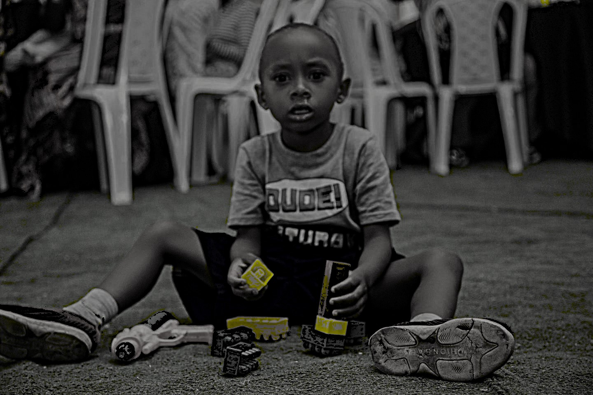

StreetBridge Foundation
The Street Bridge Foundation is a youth-led non-profit organization based in Kigali, Rwanda. Its mission is to empower vulnerable street children by providing them with essential resources such as education, healthcare, and family support. Founded during the height of the COVID-19 pandemic, the organization focuses on reintegrating these children into society through various programs.
The Street Bridge Foundation is a dynamic, youth-driven non-profit based in Kigali, Rwanda, with a mission to transform the lives of street children and their families. Established to address the challenges faced by vulnerable children living on the streets, the foundation rescues them from hazardous environments, re-enrolls them in school, and works to empower their households with self-sufficiency skills. The organization believes in community-based solutions, fostering leadership and empathy among both children and their parents.